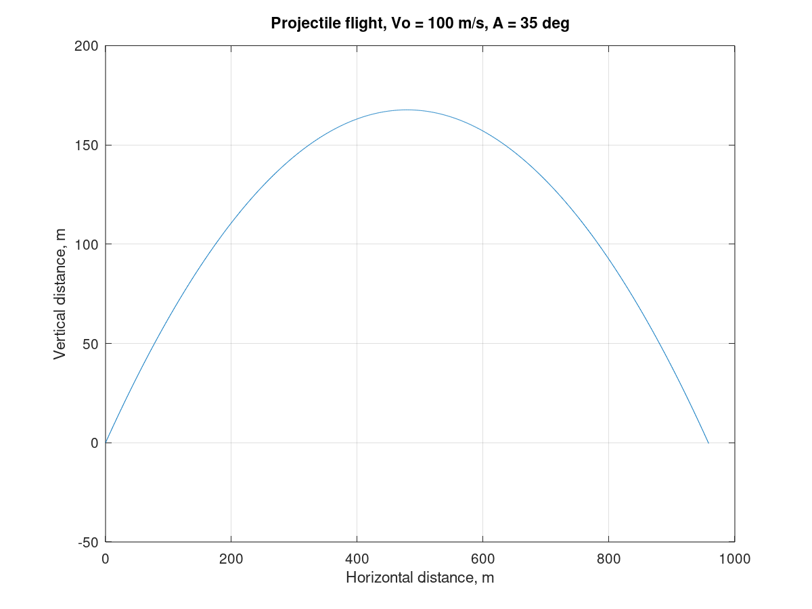

Authored by: Andres Choque Authored on: 9/14/2020
% Exercise #1 close all clear clc % Problem presentation %{ We are asked to perform some calculations for a projectile, given the equations for the horizonatal (x-direction) and vertical (y-direction) distance traveled as a function of initial velocity(Vo), launch angle(A), and time(t). We are given values for Vo and A, but x-distance, y-distance, and time are unknown. We want to know the maximum height of the projectile and the corresponding time to reach that height. We also want to create a plot of the entire flight of the projectile %} % Initialize Variables Vo = 100; % Initial velocity in m/s A = 35; % Launch in degrees g = 9.81; % Acceleration due to gravity in m/s^2 t = [0:0.01:10]; % Time array in seconds x_dist = (Vo*cosd(A))*t; % Horizontal distance traveled y_dist = (Vo*sind(A))*t - 0.5*g*t.^2; % Vertical distance traveled % Perform Calculatons % Part a. of calculations [y_max k] = max(y_dist); % Returns maximum vertical distance & index k t_max = t(k); % Returns kth in the time array % Part b. of calculations t = [0:0.01:2*t_max]; x_dist = (Vo*cosd(A))*t; % Horizontal distance traveled y_dist = (Vo*sind(A))*t - 0.5*g*t.^2; % Vertical distance traveled % Display results disp('Part a.') fprintf('The maximum altitude of the projectile is: %5.2f meters.\n\n', y_max) fprintf('This occurs at %5.2f seconds after launch.\n\n',t_max) fprintf('The total flight path is shown below.\n\n') disp('Part b.') plot(x_dist, y_dist) title('Projectile flight, Vo = 100 m/s, A = 35 deg') xlabel('Horizontal distance, m') ylabel('Vertical distance, m') grid on
Part a. The maximum altitude of the projectile is: 167.68 meters. This occurs at 5.85 seconds after launch. The total flight path is shown below. Part b.